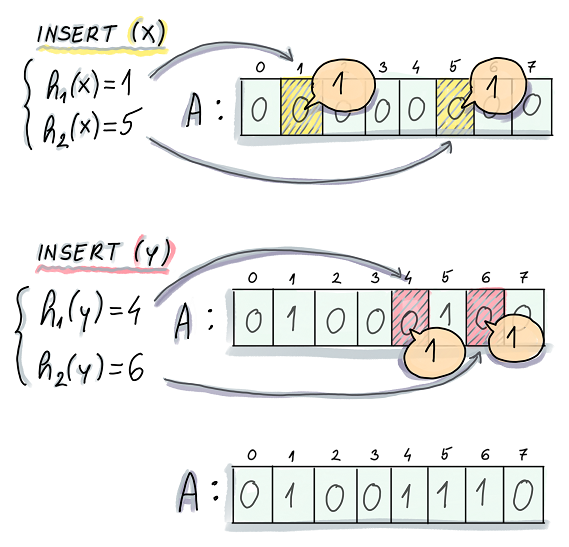
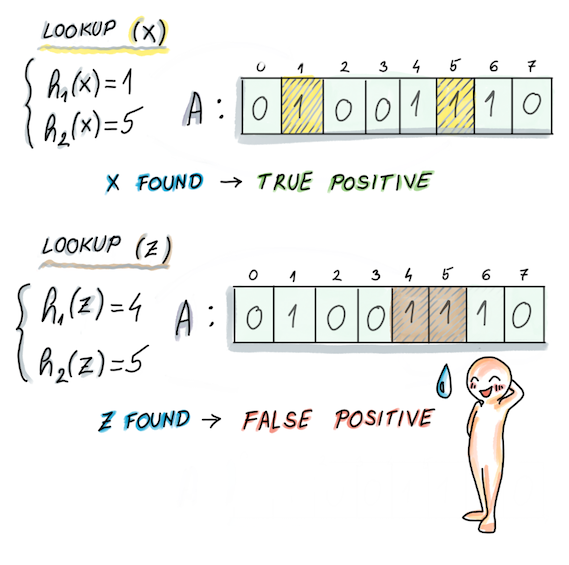
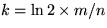
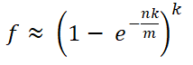

布隆过滤器
介绍
布隆过滤器是由Burton Bloom在1970年发明的一种数据结构，用于支持高效地进行成员查询操作。它可以快速地检查一个元素是否属于一个给定的集合，而且在空间占用方面比其他数据结构如哈希表更加节省。因此，它在需要高效查询的应用场景中广泛使用，例如Web缓存、网络路由和数据索引等。
布隆过滤器的基本原理是使用一个位数组和多个哈希函数来表示一个集合。假设有一个包含n个元素的集合A，将A中的每个元素都哈希为k个不同的值，这些值在位数组中对应的位置被标记为1。当查询一个元素x是否在A中时，同样地将x哈希为k个值，并检查这些位置是否都被标记为1。如果其中有任意一个位置没有被标记为1，则可以确定x不在A中。如果所有位置都被标记为1，则x可能在A中，但是由于哈希函数的碰撞（两个不同元素哈希为同一个值）可能导致误判，因此需要进行进一步的确认。
由于布隆过滤器采用了多个哈希函数和位数组的方式，因此可以快速地判断一个元素是否在集合中，而且空间复杂度相对较低。
下图演示了插入的过程，在插入x的时候，对x分别使用两个hash函数h1和h2，计算完之后得到值1和5，然后就在bloom filter的bit数组中1和5的位置标记为1。y的插入也是一样。

查询的过程也是一样做hash，查询对应的位置是否有对应的值。如果有我们就认为命中，没有就是没有命中。这里就会有概率出现"假阳性"（false positive)。

如上图中查找z的时候就是属于发生了false positive。从这个例子我们也可以知道布隆过滤器判断元素在bit数组中标记过是会出现误差的。
影响因素
-
Hash 函数。从插入的过程我们可以知道影响的因数首先是和hash函数有关，如果hash函数计算出来的hash值会集中在一定区域的话就容易出现误差。所以hash函数的选择是比较重要的。一般布隆过滤器会选择使用Murmur3作为hash函数，因为这个hash算法具有计算速度快，分布平均的特点。
-
第二个影响因素是bit数组的长度。插入元素的元素的数量。以及hash函数的次数。数学推理在下面文章中
https://pages.cs.wisc.edu/~cao/papers/summary-cache/node8.html
我们这里直接取其中的结论：
首先我们做以下定义
f 误报率
m 布隆过滤器中的bit位数
n 要插入的元素数量
k hash函数的数量
我们可以通过m和n计算出最佳的k值的计算公式：

误差率的计算公式：

然后我们将m、n和k值的对照表：
m/n k k=1 k=2 k=3 k=4 k=5 k=6 k=7 k=8 2 1.39 0.393 0.400 3 2.08 0.283 0.237 0.253 4 2.77 0.221 0.155 0.147 0.160 5 3.46 0.181 0.109 0.092 0.092 0.101 6 4.16 0.154 0.0804 0.0609 0.0561 0.0578 0.0638 7 4.85 0.133 0.0618 0.0423 0.0359 0.0347 0.0364 8 5.55 0.118 0.0489 0.0306 0.024 0.0217 0.0216 0.0229 9 6.24 0.105 0.0397 0.0228 0.0166 0.0141 0.0133 0.0135 0.0145 10 6.93 0.0952 0.0329 0.0174 0.0118 0.00943 0.00844 0.00819 0.00846 11 7.62 0.0869 0.0276 0.0136 0.00864 0.0065 0.00552 0.00513 0.00509 12 8.32 0.08 0.0236 0.0108 0.00646 0.00459 0.00371 0.00329 0.00314 13 9.01 0.074 0.0203 0.00875 0.00492 0.00332 0.00255 0.00217 0.00199 14 9.7 0.0689 0.0177 0.00718 0.00381 0.00244 0.00179 0.00146 0.00129 15 10.4 0.0645 0.0156 0.00596 0.003 0.00183 0.00128 0.001 0.000852 16 11.1 0.0606 0.0138 0.005 0.00239 0.00139 0.000935 0.000702 0.000574 17 11.8 0.0571 0.0123 0.00423 0.00193 0.00107 0.000692 0.000499 0.000394 18 12.5 0.054 0.0111 0.00362 0.00158 0.000839 0.000519 0.00036 0.000275 19 13.2 0.0513 0.00998 0.00312 0.0013 0.000663 0.000394 0.000264 0.000194 20 13.9 0.0488 0.00906 0.0027 0.00108 0.00053 0.000303 0.000196 0.00014 21 14.6 0.0465 0.00825 0.00236 0.000905 0.000427 0.000236 0.000147 0.000101 22 15.2 0.0444 0.00755 0.00207 0.000764 0.000347 0.000185 0.000112 7.46e-05 23 15.9 0.0425 0.00694 0.00183 0.000649 0.000285 0.000147 8.56e-05 5.55e-05 24 16.6 0.0408 0.00639 0.00162 0.000555 0.000235 0.000117 6.63e-05 4.17e-05 25 17.3 0.0392 0.00591 0.00145 0.000478 0.000196 9.44e-05 5.18e-05 3.16e-05 26 18 0.0377 0.00548 0.00129 0.000413 0.000164 7.66e-05 4.08e-05 2.42e-05 27 18.7 0.0364 0.0051 0.00116 0.000359 0.000138 6.26e-05 3.24e-05 1.87e-05 28 19.4 0.0351 0.00475 0.00105 0.000314 0.000117 5.15e-05 2.59e-05 1.46e-05 29 20.1 0.0339 0.00444 0.000949 0.000276 9.96e-05 4.26e-05 2.09e-05 1.14e-05 30 20.8 0.0328 0.00416 0.000862 0.000243 8.53e-05 3.55e-05 1.69e-05 9.01e-06 31 21.5 0.0317 0.0039 0.000785 0.000215 7.33e-05 2.97e-05 1.38e-05 7.16e-06 32 22.2 0.0308 0.00367 0.000717 0.000191 6.33e-05 2.5e-05 1.13e-05 5.73e-06 m/n k k=9 k=10 k=11 k=12 k=13 k=14 k=15 k=16 11 7.62 0.00531 12 8.32 0.00317 0.00334 13 9.01 0.00194 0.00198 0.0021 14 9.7 0.00121 0.0012 0.00124 15 10.4 0.000775 0.000744 0.000747 0.000778 16 11.1 0.000505 0.00047 0.000459 0.000466 0.000488 17 11.8 0.000335 0.000302 0.000287 0.000284 0.000291 18 12.5 0.000226 0.000198 0.000183 0.000176 0.000176 0.000182 19 13.2 0.000155 0.000132 0.000118 0.000111 0.000109 0.00011 0.000114 20 13.9 0.000108 8.89e-05 7.77e-05 7.12e-05 6.79e-05 6.71e-05 6.84e-05 21 14.6 7.59e-05 6.09e-05 5.18e-05 4.63e-05 4.31e-05 4.17e-05 4.16e-05 4.27e-05 22 15.2 5.42e-05 4.23e-05 3.5e-05 3.05e-05 2.78e-05 2.63e-05 2.57e-05 2.59e-05 23 15.9 3.92e-05 2.97e-05 2.4e-05 2.04e-05 1.81e-05 1.68e-05 1.61e-05 1.59e-05 24 16.6 2.86e-05 2.11e-05 1.66e-05 1.38e-05 1.2e-05 1.08e-05 1.02e-05 9.87e-06 25 17.3 2.11e-05 1.52e-05 1.16e-05 9.42e-06 8.01e-06 7.1e-06 6.54e-06 6.22e-06 26 18 1.57e-05 1.1e-05 8.23e-06 6.52e-06 5.42e-06 4.7e-06 4.24e-06 3.96e-06 27 18.7 1.18e-05 8.07e-06 5.89e-06 4.56e-06 3.7e-06 3.15e-06 2.79e-06 2.55e-06 28 19.4 8.96e-06 5.97e-06 4.25e-06 3.22e-06 2.56e-06 2.13e-06 1.85e-06 1.66e-06 29 20.1 6.85e-06 4.45e-06 3.1e-06 2.29e-06 1.79e-06 1.46e-06 1.24e-06 1.09e-06 30 20.8 5.28e-06 3.35e-06 2.28e-06 1.65e-06 1.26e-06 1.01e-06 8.39e-06 7.26e-06 31 21.5 4.1e-06 2.54e-06 1.69e-06 1.2e-06 8.93e-07 7e-07 5.73e-07 4.87e-07 32 22.2 3.2e-06 1.94e-06 1.26e-06 8.74e-07 6.4e-07 4.92e-07 3.95e-07 3.3e-07 m/n k k=17 k=18 k=19 k=20 k=21 k=22 k=23 k=24 22 15.2 2.67e-05 23 15.9 1.61e-05 24 16.6 9.84e-06 1e-05 25 17.3 6.08e-06 6.11e-06 6.27e-06 26 18 3.81e-06 3.76e-06 3.8e-06 3.92e-06 27 18.7 2.41e-06 2.34e-06 2.33e-06 2.37e-06 28 19.4 1.54e-06 1.47e-06 1.44e-06 1.44e-06 1.48e-06 29 20.1 9.96e-07 9.35e-07 9.01e-07 8.89e-07 8.96e-07 9.21e-07 30 20.8 6.5e-07 6e-07 5.69e-07 5.54e-07 5.5e-07 5.58e-07 31 21.5 4.29e-07 3.89e-07 3.63e-07 3.48e-07 3.41e-07 3.41e-07 3.48e-07 32 22.2 2.85e-07 2.55e-07 2.34e-07 2.21e-07 2.13e-07 2.1e-07 2.12e-07 2.17e-07
实现：
然后是我使用swift实现的一个布隆过滤器
import Foundation
fileprivate func optimalK(m: Int, n: Int) -> Int {
let _m = Double(m)
let _n = Double(n)
let k = _m / _n * M_LN2
let ck = Int(ceil(k))
let fk = Int(floor(k))
let ckf = falsePositiveProbability(m: m, n: n, k: ck)
let fkf = falsePositiveProbability(m: m, n: n, k: fk)
// print("------- \(ckf) \(fkf)")
return ckf > fkf ? fk : ck
}
fileprivate func falsePositiveProbability(m: Int, n: Int, k: Int) -> Double {
let _k = Double(k)
let _n = Double(n)
let _m = Double(m)
let f = pow(1.0 - exp(-_k * _n / _m), _k)
return f
}
open class BloomFilter {
private var bits: [Bool]
private let hashCount: Int
private let seed: UInt32
// m/n 最优比例（平衡误报率和内存占用）9.8385e-6 < 1e-5
public static let mnRate1e_5 = 24
/// init function
/// - Parameters:
/// - maxElements: maximum capacity
/// - seed: hash seed
/// - rate: rate of bit to maximum capacity
public init(maxElements: Int, seed: UInt32 = 0, rate: Int = mnRate1e_5) {
let n = maxElements
let m = n * rate
let k = optimalK(m: m, n: n)
// print("optimal K \(k)")
self.bits = Array(repeating: false, count: m)
self.hashCount = k
self.seed = seed
}
/// add to bloom filter
/// - Parameter string: value
open func add(_ string: String) {
let hashes = self.hashValues(string)
for hash in hashes {
self.bits[hash] = true
}
}
/// if the value is in the bloom filter
/// - Parameter string: value
/// - Returns: result
open func contains(_ string: String) -> Bool {
let hashes = self.hashValues(string)
for hash in hashes {
if !self.bits[hash] {
return false
}
}
return true
}
private func hashValues(_ string: String) -> [Int] {
var hashValues = [Int]()
let data = string.data(using: .utf8)!
for i in 0..<self.hashCount {
let hash = MurmurHash3.sum32(data, seed: self.seed &+ UInt32(i))
let index = abs(Int(hash)) % self.bits.count
hashValues.append(index)
}
return hashValues
}
}
性能分析
在swift中一个Bool类型占一个字节。假定我们元素的总数量是1万个。使用代码中默认的的m/n的比例24，总共需要24*1e4 byte = 234.375 KB。这个数量级的数据只用了200多KB的内存已经很好了。
但是我们回头思考一下是否有更优的方案呢？我们注意到一个Bool类型是占1个字节的，表示true和false两个值。如果只需要表示两个值。我们只需要一个比特位就行了0和1，那么一个字节拆成八个布尔值。确定了方案我们看一下优化后的代码实现
import Foundation
@inline(__always)
func ceil64(_ v: Int) -> Int {
(v + 63) >> 6
}
fileprivate func optimalK(m: Int, n: Int) -> Int {
let _m = Double(m)
let _n = Double(n)
let k = _m / _n * M_LN2
let ck = Int(ceil(k))
let fk = Int(floor(k))
let ckf = falsePositiveProbability(m: m, n: n, k: ck)
let fkf = falsePositiveProbability(m: m, n: n, k: fk)
return ckf > fkf ? fk : ck
}
fileprivate func falsePositiveProbability(m: Int, n: Int, k: Int) -> Double {
let _k = Double(k)
let _n = Double(n)
let _m = Double(m)
let f = pow(1.0 - exp(-_k * _n / _m), _k)
return f
}
open class BloomFilter {
private var bits: [UInt64]
private var bitsCount: Int
private let hashCount: Int
private let seed: UInt32
// m/n 最优比例（平衡误报率和内存占用）9.8385e-6 < 1e-5
public static let mnRate1e_5 = 24
private static let UINT64_BITS: Int = 64
/// init function
/// - Parameters:
/// - maxElements: maximum capacity
/// - seed: hash seed
/// - rate: rate of bit to maximum capacity
public init(maxElements: Int, seed: UInt32 = 0, rate: Int = mnRate1e_5) {
let n = maxElements
let m = n * rate
let k = optimalK(m: m, n: n)
// print("optimal K \(k)")
self.bits = Array(repeating: 0, count: ceil64(m))
self.hashCount = k
self.bitsCount = m
self.seed = seed
}
@inline(__always)
private func locationIndex(_ value: Int) -> (location: Int, index: Int) {
return (location: value / BloomFilter.UINT64_BITS, index: value % BloomFilter.UINT64_BITS)
}
/// add to bloom filter
open func add(_ element: String) {
let locations = self.hashValues(element)
for location in locations {
let (lct, idx) = locationIndex(location)
self.bits[lct] = self.bits[lct] | 1 << idx
}
}
/// if the value is in the bloom filter
/// - Parameter string: value
/// - Returns: result
open func contains(_ element: String) -> Bool {
let hashes = self.hashValues(element)
for hash in hashes {
let (lct, idx) = locationIndex(hash)
if self.bits[lct] & 1 << idx == 0 {
return false
}
}
return true
}
private func hashValues(_ string: String) -> [Int] {
var hashValues = [Int]()
let data = string.data(using: .utf8)!
for i in 0..<self.hashCount {
let hash = MurmurHash3.sum32(data, seed: self.seed &+ UInt32(i))
let index = abs(Int(hash)) % self.bitsCount
hashValues.append(index)
}
return hashValues
}
}
优化之后的代码使用一个UInt64表示64个位置。那么一万个元素的布隆过滤器， 使用代码中默认的的m/n的比例24，占用的空间为 24 * 1e4 * 8 / 64 bytes = 3e4 bytes = 29.30 KB。我们使用不到30KB的空间就保存了一万个元素。